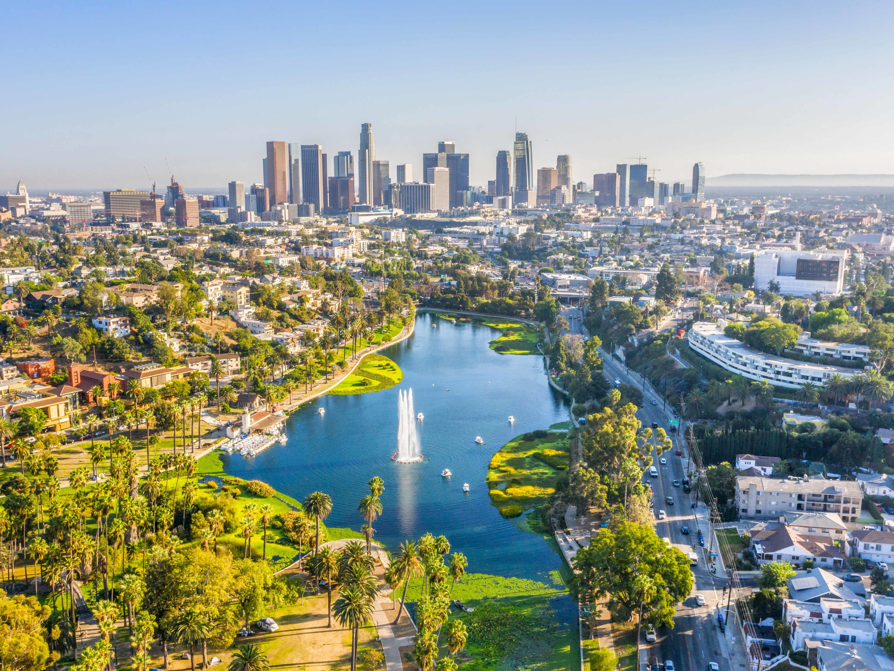
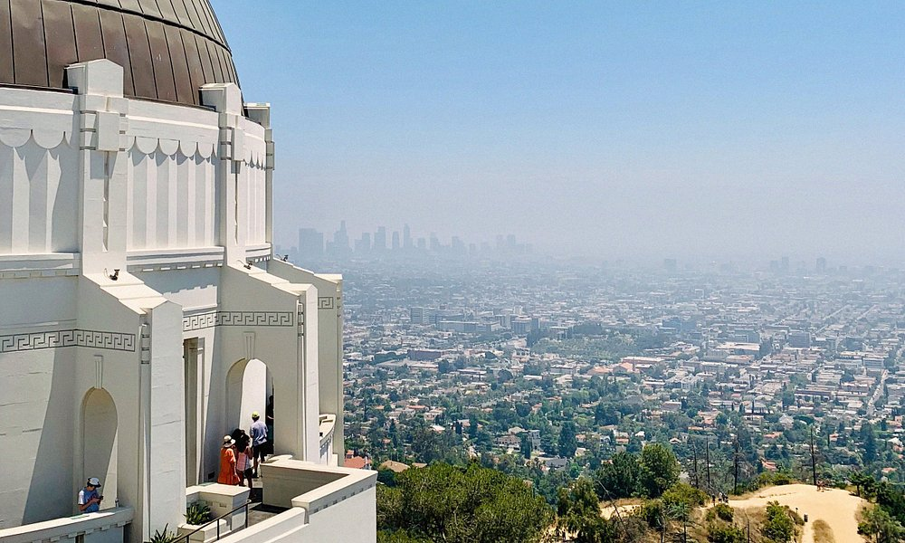

Los Angeles

Pre-colonial history
The Los Angeles coastal area was settled by the Tongva (Gabrieleños) and Chumash tribes. Los Angeles would eventually be founded on the village of iyáangẚ or Yaanga (written "Yang-na" by the Spanish), meaning "poison oak place. Maritime explorer Juan Rodríguez Cabrillo claimed the area of southern California for the Spanish Empire in 1542 while on an official military exploring expedition moving north along the Pacific coast from earlier colonizing bases of New Spain in Central and South America. Gaspar de Portolà and Franciscan missionary Juan Crespí, reached the present site of Los Angeles on August 2, 1769.
Spanish rule
In 1771, Franciscan friar Junípero Serra directed the building of the Mission San Gabriel Arcángel, the first mission in the area. On September 4, 1781, a group of forty-four settlers known as "Los Pobladores" founded the pueblo they called El Pueblo de Nuestra Señora la Reina de los Ángeles, 'The Town of Our Lady the Queen of the Angels'. The present-day city has the largest Roman Catholic archdiocese in the United States. Two-thirds of the Mexican or (New Spain) settlers were mestizo or mulatto, a mixture of African, indigenous and European ancestry. The settlement remained a small ranch town for decades, but by 1820, the population had increased to about 650 residents. Today, the pueblo is commemorated in the historic district of Los Angeles Pueblo Plaza and Olvera Street, the oldest part of Los Angeles.
Geology
Los Angeles is subject to earthquakes because of its location on the Pacific Ring of Fire. The geologic instability has produced numerous faults, which cause approximately 10,000 earthquakes annually in Southern California, though most of them are too small to be felt. The strike-slip San Andreas Fault system, which sits at the boundary between the Pacific Plate and the North American Plate, passes through the Los Angeles metropolitan area. The segment of the fault passing through Southern California experiences a major earthquake roughly every 110 to 140 years, and seismologists have warned about the next "big one", as the last major earthquake was the 1857 Fort Tejon earthquake. The Los Angeles basin and metropolitan area are also at risk from blind thrust earthquakes. Major earthquakes that have hit the Los Angeles area include the 1933 Long Beach, 1971 San Fernando, 1987 Whittier Narrows, and the 1994 Northridge events. All but a few are of low intensity and are not felt. The USGS has released the UCERF California earthquake forecast, which models earthquake occurrence in California. Parts of the city are also vulnerable to tsunamis; harbor areas were damaged by waves from Aleutian Islands earthquake in 1946, Valdivia earthquake in 1960, Alaska earthquake in 1964, Chile earthquake in 2010 and Japan earthquake in 2011.
Overview
The city's street patterns generally follow a grid plan, with uniform block lengths and occasional roads that cut across blocks. However, this is complicated by rugged terrain, which has necessitated having different grids for each of the valleys that Los Angeles covers. Major streets are designed to move large volumes of traffic through many parts of the city, many of which are extremely long; Sepulveda Boulevard is 43 miles (69 km) long, while Foothill Boulevard is over 60 miles (97 km) long, reaching as far east as San Bernardino. Drivers in Los Angeles suffer from one of the worst rush hour periods in the world, according to an annual traffic index by navigation system maker, TomTom. LA drivers spend an additional 92 hours in traffic each year. During the peak rush hour there is 80% congestion, according to the index. Los Angeles is often characterized by the presence of low-rise buildings. Outside of a few centers such as Downtown, Warner Center, Century City, Koreatown, Miracle Mile, Hollywood, and Westwood, skyscrapers and high-rise buildings are not common. The few skyscrapers built outside of those areas often stand out above the rest of the surrounding landscape. Most construction is done in separate units, rather than wall-to-wall. That being said, Downtown Los Angeles itself has many buildings over 30 stories, with fourteen over 50 stories, and two over 70 stories, the tallest of which is the Wilshire Grand Center. Also, Los Angeles is increasingly becoming a city of apartments rather than single family dwellings, especially in the dense inner city and Westside neighborhoods.
Transportation
Freeways
The city and the rest of the Los Angeles metropolitan area are served by an extensive network of freeways and highways. The Texas Transportation Institute, which publishes an annual Urban Mobility Report, ranked Los Angeles road traffic as the most congested in the United States in 2005 as measured by annual delay per traveler. The average traveler in Los Angeles experienced 72 hours of traffic delay per year according to the study. Los Angeles was followed by San Francisco/Oakland, Washington, D.C. and Atlanta, (each with 60 hours of delay). Despite the congestion in the city, the mean travel time for commuters in Los Angeles is shorter than other major cities, including New York City, Philadelphia and Chicago. Los Angeles's mean travel time for work commutes in 2006 was 29.2 minutes, similar to those of San Francisco and Washington, D.C. Among the major highways that connect LA to the rest of the nation include Interstate 5, which runs south through San Diego to Tijuana in Mexico and north through Sacramento, Portland, and Seattle to the Canada–US border; Interstate 10, the southernmost east–west, coast-to-coast Interstate Highway in the United States, going to Jacksonville, Florida; and U.S. Route 101, which heads to the California Central Coast, San Francisco, the Redwood Empire, and the Oregon and Washington coasts.
Transit systems
The LA County Metropolitan Transportation Authority (LA County Metro) and other agencies operate an extensive system of bus lines, as well as subway and light rail lines across Los Angeles County, with a combined monthly ridership (measured in individual boardings) of 38.8 million as of September 2011. The majority of this (30.5 million) is taken up by the city's bus system, the second busiest in the country. The subway and light rail combined average the remaining roughly 8.2 million boardings per month. LA County Metro recorded over 397 million boardings for the 2017 calendar year, including about 285 million bus riders and about 113 million riding on rail transit.[184] For the first quarter of 2018, there were just under 95 million system-wide boardings, down from about 98 million in 2017, and about 105 million in 2016. In 2005, 10.2% of Los Angeles commuters rode some form of public transportation. According to the 2016 American Community Survey, 9.2% of working Los Angeles (city) residents made the journey to work via public transportation. The city's subway system is the ninth busiest in the United States and its light rail system is the country's busiest. The rail system includes the B and D subway lines, as well as the A, C, E, and L light rail lines. In 2016, the E Line was extended to the Pacific Ocean at Santa Monica. The Metro G and J lines are bus rapid transit lines with stops and frequency similar to those of light rail. As of 2018, the total number of light rail stations is 93. The city is also central to the commuter rail system Metrolink, which links Los Angeles to all neighboring counties as well as many suburbs. Besides the rail service provided by Metrolink and the Los Angeles County Metropolitan Transportation Authority, Los Angeles is served by inter-city passenger trains from Amtrak. The main rail station in the city is Union Station just north of Downtown.
Seaports
The Port of Los Angeles is in San Pedro Bay in the San Pedro neighborhood, approximately 20 miles (32 km) south of Downtown. Also called Los Angeles Harbor and WORLDPORT LA, the port complex occupies 7,500 acres (30 km2) of land and water along 43 miles (69 km) of waterfront. It adjoins the separate Port of Long Beach. The sea ports of the Port of Los Angeles and Port of Long Beach together make up the Los Angeles/Long Beach Harbor. Together, both ports are the fifth busiest container port in the world, with a trade volume of over 14.2 million TEU's in 2008. Singly, the Port of Los Angeles is the busiest container port in the United States and the largest cruise ship center on the West Coast of the United States – The Port of Los Angeles's World Cruise Center served about 590,000 passengers in 2014. There are also smaller, non-industrial harbors along Los Angeles's coastline. The port includes four bridges: the Vincent Thomas Bridge, Henry Ford Bridge, Gerald Desmond Bridge, and Commodore Schuyler F. Heim Bridge. Passenger ferry service from San Pedro to the city of Avalon on Santa Catalina Island is provided by Catalina Express.